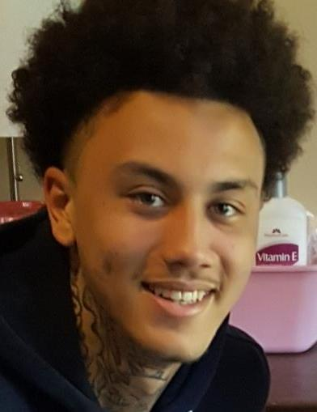

At about 1:20 a.m. on Saturday, April 9, 2022, police were sent to a large fight with possible gunfire outside Babe's Cafe at Applegate and Glenmore avenues, on the border of Cincinnati's Westwood neighborhood and the city of Cheviot. London Donjoir Harris, 23, was shot and died at the scene. A friend of his was also shot, fled in a car, and survived. A friend said the fight started after someone accidentally bumped another person in line. No one has been charged.
London was the father of a two-year-old son. Three days before he died, Cincinnati City Council had voted to oppose the bar's liquor license: police counted 39 calls there since January 2021, including a shooting, fights and a heroin overdose, and undercover officers had bought cocaine from its bartenders four times. His family said the bar should close. A year later, Cheviot police said they had no new leads.
Editorial assessment of public sources, not a finding of fact. Nobody named here has been charged unless this page says so.
Details come from FOX19 and WCPO (Apr 9, 2022), WKRC (Apr 10, 2022, and Apr 7, 2023), WCPO's reporting on the bar's liquor license, and his obituary and family fundraiser. Reports give the time as 1:15, 1:20 or 1:30 a.m., and place it in Westwood or Cheviot; the bar sits on the border.
London Donjoir Harris is born, per his obituary.
A man is shot in the back outside Babe's in June 2021, and another shooting follows there in July, per WKRC and police testimony.
Undercover officers buy cocaine from Babe's bartenders on four occasions, police later tell City Council.
A city committee hears that police have answered 39 calls at Babe's since January 2021. On Wednesday, April 6, City Council votes unanimously to object to renewing its liquor license; the state makes the final decision.
Police are sent to Applegate and Glenmore avenues for a large fight outside Babe's Cafe with possible gunfire. London Harris, 23, is found shot and is pronounced dead at the scene.
A second man, described by WKRC in 2023 as London's friend, flees in a car and is found several blocks away in the 3700 block of Applegate Avenue. His injury is not life-threatening.
About three dozen family members and friends gather across the street from the bar. A friend says the fight began with an accidental bump in line. The family tells WCPO the bar should close.
A private graveside service is followed by a celebration of life. A family fund raises money for his funeral and for his two-year-old son.
Cheviot police tell WKRC there have been no new leads.
Business directories list Babe's Cafe as permanently closed. We could not confirm when or why.
A 23-year-old father of a young son, and the friend who survived.

Photo supplied by the site owner; source and license not yet confirmed. Removal or credit requests: use the contact form below.
DiedBorn Dec 27, 1998. The father of a two-year-old son. Loved ones remembered him as a father, son and grandson who "came from a good family," and a family friend wrote, "He was always smiling!" We do not name his living relatives.
Also shot. He fled in a car and was found several blocks away with a non-life-threatening injury. He is a witness and has not been named publicly; neither do we.
Where a card shows a silhouette, we found no freely licensed photo. Family members or others who want a photo added, changed, or removed can use the contact form at the bottom of this page.
What exists, and what each piece may or may not mean.
| Item | What is known | Disputed or unknown |
|---|---|---|
| The fight | Police were called to a "large fight" outside the bar (FOX19, WCPO). | How many people were involved: not public. |
| How it started | A friend said someone accidentally bumped another person in line (WKRC). | This is a friend's account; police have not described the cause. |
| The shooting | London was shot and died at the scene; his friend was also hit. | Number of shots, weapon, and whether there was more than one shooter: not public. |
| The friend's flight | He drove off and was found in the 3700 block of Applegate Avenue (Cheviot police via WCPO). | What he told police: not public. |
| The bar | 39 police calls since Jan 2021; a shooting, three fights and an overdose among them; four cocaine buys from bartenders (police testimony, WCPO). | Whether the bar had working cameras that night: not public. |
| Suspects | Police released no names or descriptions. | Unknown. |
News reports, city liquor-license testimony and his obituary are the public record. There is no Ohio Attorney General listing. The Cheviot police file is not public.
| Document | Holder | What it shows | Access |
|---|---|---|---|
| FOX19 (Apr 9, 2022) | FOX19 | Call time, large fight, second victim. | Online, free |
| WKRC (Apr 10, 2022) | WKRC | Vigil; bump in line; bar history. | Online, free |
| WCPO: liquor license hearing (Apr 2022) | WCPO | Police testimony: 39 calls, cocaine buys. | Online, free |
| Ohio Liquor Control Commission decision on Babe's Cafe | Ohio Division of Liquor Control | The license outcome; not located. | Request needed |
| Cheviot police homicide file, scene video and autopsy | Cheviot Police; Hamilton County Coroner | The investigation. | Withheld or sealed |
Access labels: Online, free = we could open it. Fan-hosted copy = a private researcher posted scans; originals are held by the named agency, and we cannot vouch for completeness. Quoted in news = reporters read it; we did not see the document itself. Request needed = held by an agency or court. Withheld = the holder has not released it. We cannot reach non-public records, and we do not try to.
Where people talk about this case online, and how to read it.
| Platform | Live search | What you tend to find |
|---|---|---|
| Google: Reddit | site:reddit.com search | Public Reddit threads that Google has indexed, including old discussions. |
| Google: X and Twitter | X and Twitter posts | Public posts and profiles that appear in search results. |
| Google: Facebook | Public Facebook pages and posts | Only public pages and groups that Google can see. Private groups never appear. |
| Google: Instagram and TikTok | Instagram and TikTok | Public posts, memorials, and videos. |
| Google: forums | Forums and message boards | Long-running true-crime forums. |
| Google News | Latest news | Newest reporting, which is usually more reliable than posts. |
| Search Reddit | Long discussion threads and theories, often by amateur researchers. No sign-in needed to read. | |
| X (Twitter) | Search X | Short posts, news links, and anniversary notes. May require sign-in. |
| Search Facebook | Public groups and family or community pages. Requires sign-in. | |
| Search #londonharris | Memorial and true-crime posts. Requires sign-in. | |
| YouTube | Search YouTube | Documentaries, news clips, and interviews. Quality varies widely. |
Be careful with online theories. Naming a private person as a suspect can harm an innocent family, and many "identifications" on forums have been wrong. Our own tools could not read these platforms: Reddit blocks automated access, and the others require an account. The Google searches above work from your browser. To get new public mentions by email, make a free Google Alert for the case name in quotation marks.
What local and national reports say, and when we last checked for a solution.
| Date | Outlet | What it reported | Link |
|---|---|---|---|
| Apr 9, 2022 | FOX19 | One dead, one injured after a large fight outside Babe's Cafe. | Read |
| Apr 10, 2022 | WCPO | Family identifies him and wants the bar closed. | Read |
| Apr 10, 2022 | WKRC | Vigil; a friend says the fight began with a bump in line. | Read |
| Apr 7, 2023 | WKRC | One year later: no new leads. | Read |
Status is re-checked on a regular schedule. If you know of a development we missed, use the clue form near the top of this page or the contact form, and include a link.
No suspect has been publicly named.
Why named: Someone fired during a large fight outside the bar.
Against: No name, description or vehicle has been released.
Why named: A friend said the fight began after an accidental bump in line, so there was another group.
Against: Who they were has not been made public.
Where a card shows a silhouette, we found no photo. Anyone who wants a photo added, changed, or removed can use the contact form at the bottom of this page.
The newest public statement is Cheviot police's, one year after the shooting.
We put the chance that the shooter was part of the fight, not a bystander or passer-by, at roughly 75%. We put the chance that someone saw or recorded the shooter's face at roughly 70%, given the crowd. We put the chance of a charge within five years at roughly 15%, higher than our older files because the case is recent and had many witnesses, but lowered by a year with no new leads.
Editorial judgment, not statistics.
"—" means no public information, not a clean result.
| Person or idea | At the scene | Physical link | Legal outcome |
|---|---|---|---|
| Shooter from the other group in the fight | ✓ per accounts | — none published | — unidentified |
| A stranger or passer-by | ? unlikely | — | — |
✗ excluded or contradicted · ✓ supports · ? disputed · — nothing public. No cell is an official finding.
Editorial reading of public records. A working theory, not a finding, and it names no individual.
Judgment, not statistics.
Questions raised by gaps in the public record.
Who was bumped in line, and who they were with.
Phone video and any bar or business cameras on Glenmore and Applegate.
What he saw before he drove away.
Shell casings and whether the gun appears in other shootings (NIBIN).
Who left the area just after 1:20 a.m.
"Not public" means we could not find a report.
| Item | Tested | Gap |
|---|---|---|
| Autopsy | Done in 2022. | Not public. |
| Scene evidence | Unknown. | Casings and video: not public. |
| Police file | Cheviot Police. | Public index: not available. |
| Tool | What it could do | Status here |
|---|---|---|
| DNA from retained evidence | Identify a donor or exclude people. | Unknown; not reported |
| Forensic genetic genealogy | Identify an unknown donor from relatives. | Needs usable DNA; none reported |
| Ballistics database (NIBIN) | Link recovered casings or bullets to other crimes. | Not reported |
Local cases that moved after decades.
Investigators say a private genealogy investigation helped them identify Thomas Dunaway, who died in 1990, as the man who killed the 16-year-old. He cannot be indicted, so prosecutors sent a letter saying he would have been charged. The lesson: genealogy can name a killer after decades, even when no trial is possible.
In 2024, local investigators were being trained in the technique, which has already helped solve Cincinnati-area cases, according to FOX19. The lesson: the tool is now local, so cases with usable DNA have a real path forward.
Old crime-scene DNA matched relatives in a public database and led to a 2018 arrest. The lesson: a usable sample can still work after decades.
Case details come from public news coverage and the Boone County Sheriff's cold-case list. Confirm in court records.
| Claim | Source and date | Where it stands |
|---|---|---|
| Cheviot triple shooting (2026) | Search results | A June 2026 shooting in the 3600 block of Glenmore Avenue that killed Juawaun Booker is a different case. |
| "Third-party investigation" | A search summary | One search summary claimed police mentioned a personnel investigation. That line is not in the WKRC article; we do not use it. |
| Other Westwood shootings | Search results | FOX19 stories about other Westwood shootings in 2022 and 2024 are unrelated. |
Babe's Cafe stood at Glenmore and Applegate avenues (directories give 3389 Glenmore Avenue), on the line between Cincinnati's Westwood neighborhood and the city of Cheviot. His friend was found in the 3700 block of Applegate Avenue.
Open in maps: Glenmore & Applegate, Westwood/Cheviot. We show no photograph of the scene.
| Source | Type | Rating | Use with care because |
|---|---|---|---|
| FOX19, Apr 9, 2022 | Local news | B+ | Opened; call time, large fight, second victim, Cheviot police. |
| WCPO, Apr 9-10, 2022 (two stories) | Local news | B+ | Opened; location, friend found on Applegate, family wants bar closed. |
| WKRC, Apr 10, 2022 | Local news | B+ | Opened; vigil, bump in line, bar history. |
| WKRC, Apr 7, 2023 | Local news | B+ | Opened; no new leads; tip lines. |
| WCPO, April 2022 (liquor licenses) | Local news | B+ | Opened; 39 calls, cocaine buys, council vote. |
| Obituary (Echovita) and family fund (TMC Funding) | Obituary / fundraiser | B | Opened; birth date, his son, services. |
513-661-2917 (2023 tip line); 513-825-2280 was given in 2022.
513-352-3040; tips can be anonymous.
Charging decisions.
Under the Ohio Public Records Act, I request copies of non-exempt records relating to the April 9, 2022 shooting death of London Donjoir Harris, 23, outside Babe's Cafe at Glenmore and Applegate avenues, including incident reports, laboratory reports, and any evidence inventory. Please send electronic copies. If any part is withheld, please identify the exemption relied on and release all reasonably segregable material.
Agencies often withhold records of open investigations, so expect partial answers.
London was 23 and the father of a two-year-old son. His family held a vigil across from the bar two days after he died and said the bar should close.
Loading headlines…
Every fact on this page comes from one of these. Where they disagree, we say so above.
The "bump in line" account comes from a friend, as reported by WKRC. Times range from 1:15 to 1:30 a.m. across reports. The bar's closure comes from business directories, not an official notice. We found no AG listing, no reward and no arrest. His photo was supplied by the site owner; its source is not yet confirmed. We do not name his family, his son, the surviving friend or the bar's staff.